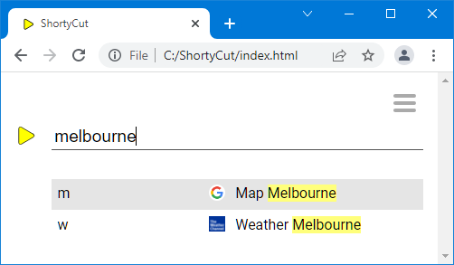
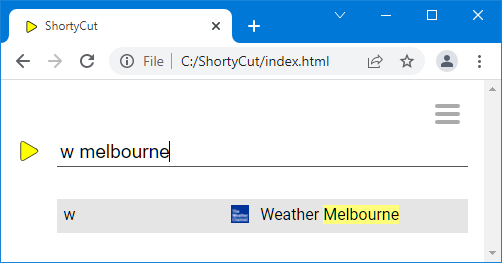

Search buckets
Search buckets
ShortyCut's homepage can perform a full-text search across all bookmarks. This happens automatically when the input does not match any keywords. The full-text search is great for rarely accessed pages that don't require a dedicated keyword. Search buckets can be used to limit the scope of the full-text search.
Full-text search
A bookmark collection might contain links to the weather forecast and maps of selected cities:
[w] Weather https://weather.com/
[w] Weather Melbourne ?https://weather.com/melbourne
[w] Weather Sydney ?https://weather.com/sydney
[m] Map https://www.google.com.au/maps/
[m] Map Melbourne ?https://www.google.com.au/maps/melbourne
[m] Map Sydney ?https://www.google.com.au/maps/sydney
In this example, the links are marked with ?. When entering a keyword (w or m), ShortyCut would display a list of all links for interactive selection.
A specific link can also be accessed by performing a full-text search, for example by entering the name of a city:

The full-text search returns results from all bookmarks in the collection, including both weather and maps.
Scoped search
Keywords can have "searchable" links. By default, they are prefixed with the hash symbol (#):
[w] Weather https://weather.com/
[w] Weather Melbourne #https://weather.com/melbourne
[w] Weather Sydney #https://weather.com/sydney
[m] Map https://www.google.com.au/maps/
[m] Map Melbourne #https://www.google.com.au/maps/melbourne
[m] Map Sydney #https://www.google.com.au/maps/sydney
When solely entering the keyword (w or m), only the first link (without the #) would be opened. The searchable links are only accessible via the full-text search. However, it can now be restricted to one bucket by entering the respective keyword first:

In this example, the full-text search only considers searchable links that are attached to the keyword w.
The symbol used to mark searchable links (# by default) can be changed by setting the searchBucket configuration property.